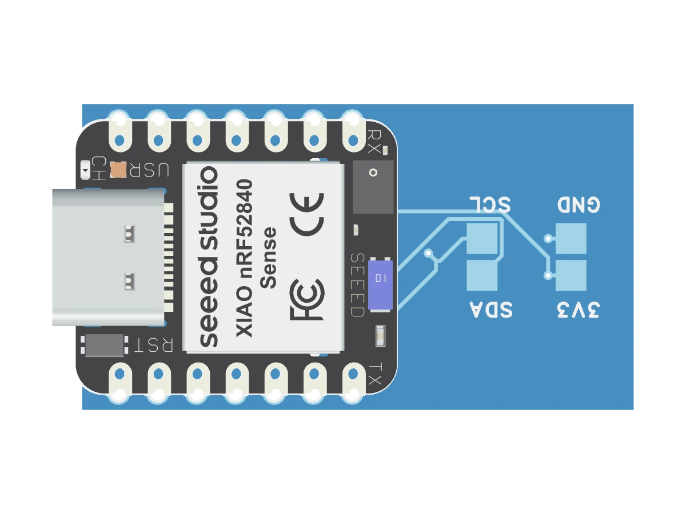
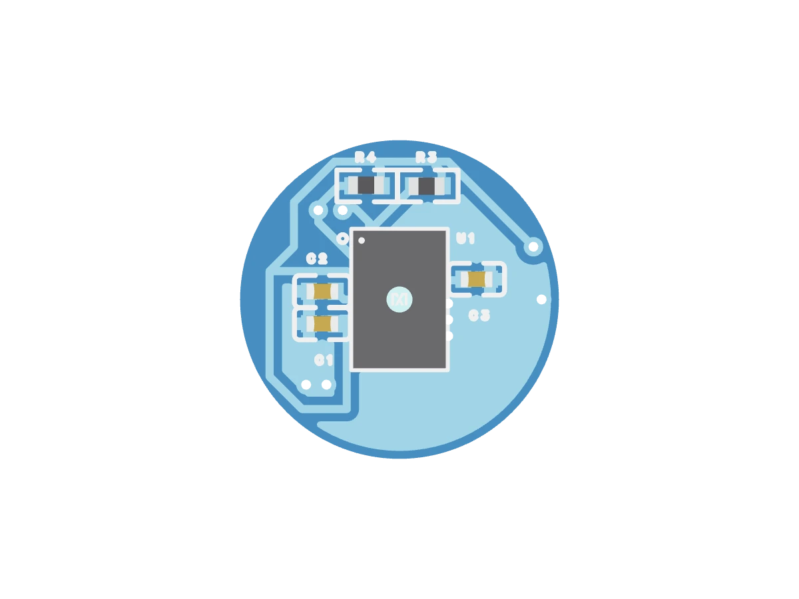

Swappable sensors
Change the measurement module instead of replacing the device. Configure for research, safety, wellness, or quantified-self setups.
Configurable wristband
OpenPulse measures body signals and environment context with swappable sensor modules. Tell us what you need to measure; we configure the band, data path, and first pipeline around it.

The problem
Most wearables are fixed at the factory: fixed sensors, fixed algorithms, fixed data access. That works for general fitness. It breaks the moment a lab, employer, resort, or open-source builder needs a specific signal mix.
Hard to inspect, export, reproduce, or build on.
A tennis study, a safety pilot, and an EDA experiment do not need the same hardware.
The Empatica E4 has been retired, leaving teams to rethink raw biosignal wearables.1
The OpenPulse loop
Heart rate, EDA, motion, temperature, gas, acoustics, or a use-case-specific combination.
Pick modules for the wrist signals and surrounding environment, while the same band architecture stays in place.
Local acquisition, open processing primitives, exportable data, and pilot-specific output adapters.
Configuration layer
For a pilot partner, the first question is never "which model do you want?" It is "what signal do you need, in which context, and what should the output trigger?"
PPG, EDA, temperature, motion.
Gas, ambient temperature, humidity, acoustics.
Local processing, export, dashboard, or alert.
Configured hardware, open data path, documented signal stack.
Change the measurement module instead of replacing the device. Configure for research, safety, wellness, or quantified-self setups.
Open API, local processing, exportable data, and an open-source core for the layers that need transparency.
EDA, bioimpedance, environment sensing, and cross-sensor combinations make OpenPulse useful beyond standard fitness.



Real, not a render story
The main PCB has been manufactured, assembled, and tested around the Seeed XIAO nRF52840 Sense. The round sensor-module PCBs and components are ready for assembly and reflow. The site should show both: what works today, and what is still being validated.
Trust block
For whom
EDA, PPG, temperature, motion, open export.
Gas, heat, heart-rate context, local alerts.
EDA + HR pipelines for controlled studies.
Configured bands for retreats and premium programs.
OpenPulse pilots
Bring the use case. We will map the sensor configuration, data path, and first pilot setup.
Talk to us